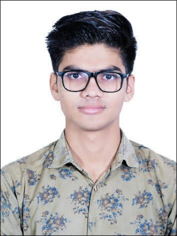

 Akarsh Srivastava
ContactMe
Summary
Aspiring web developer with a solid foundation in HTML, CSS, and JavaScript. Eager to learn and contribute
to dynamic projects. Familiarity with modern front-end libraries and frameworks. Strong problem-solving skills
and a passion for creating visually appealing and user-friendly websites. Excellent teamwork and
communication abilities. Excited to leverage academic knowledge and stay updated on industry trends to
deliver innovative web solutions.
Technical Skills
- C , C++ , JAVA , HTML , CSS , PHP , Bootstrap ,SQL
- Windows , MS Office , MS Visual Studio Code
Projects
ONLINE FOOD ORDER WEBSITE
- The aim of developing Online Food Ordering system project is to taking orders with computerized system
and to prepare order summary reports
- Technology used: HTML , CSS
- Integrated Development Environment(IDE): VS Code.
`.
MOVIE TICKET BOOKING SYSTEM
Technology Used: C
Features:
- Booking Ticket
- Cancel Ticket
- Change Ticket Price
- View All booking tickets
HACKSPOTMEET-2017 (Conference)
- An Ethical Hacking and Information Security Conference Conducted at PSIT Auditorium -Kanpur,India
- Ethical hacking ensures digital safety by identifying vulnerabilities, while information security
safeguards data from unauthorized access, ensuring privacy and integrity.
.
.
Certifications
- C Tutorial course, SOLOLEARN
- HTML , SOLOLEARN
- Learning Java, LinkedIn Learning
- Cyber security Essentials
- Course Introduction to Web Design and Development, LinkedIn Learning
In Progress:-
- The Compete 2023 Web Development Bootcamp ,Udemy
Education
- Master of Computer Application (2023) Dr. A. P. J. Abdul Kalam Technical University, Lucknow
(2021)
- Bachelor of Computer Applications Chhatrapati Shahu Ji Maharaj University, Kanpur
- Senior School (Class 12) (2017) Rapid Global School - Bidhuna
- Secondary School (Class 10) (2015) Rapid Global School - Bidhuna
Portfolios
Accompolishments
- Prticipate in collage fest "Fresher Frinzz".
- Technical Co Head in Collage " Srijan society ".
Hobbies
- Listening Music 🎧
- Watching Movies 🎬
- Gaming 🎮
Additional Skills
- Adaptability, Knowledge and Focus on work.
- Keep myself calm in pressure situation.
- Quick learner and Smart worker.
- Willingness to learn new things.